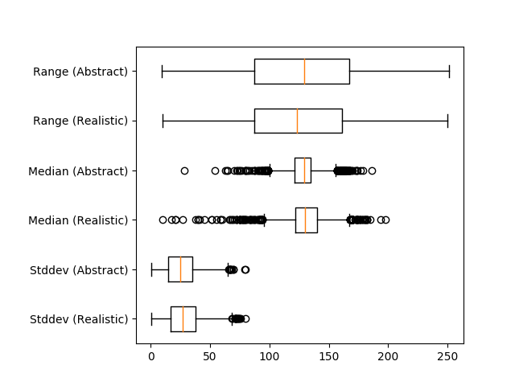
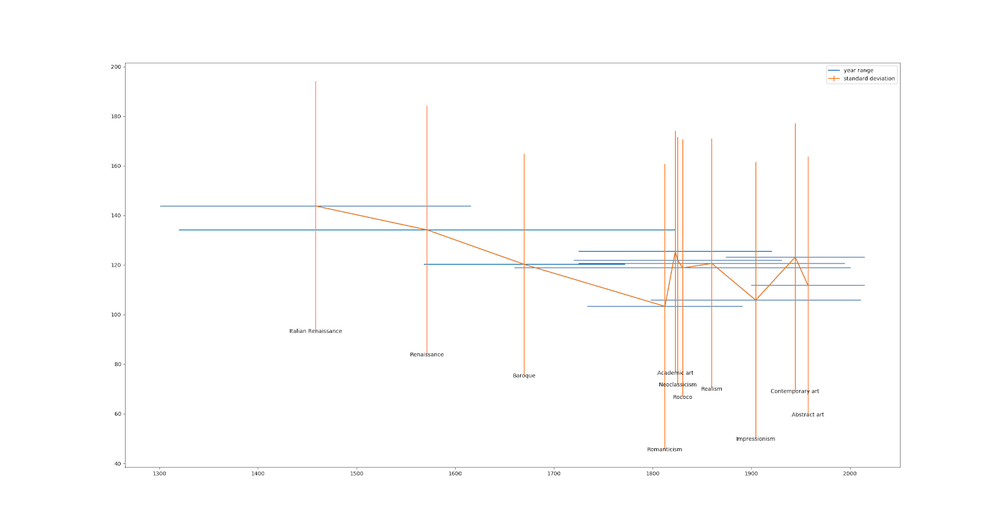

Depth Predictions in Art
This is the first of two posts (second is here) that accompany our visualization, which is open-sourced.
Painters throughout art history have used various techniques to represent our three-dimensional world on a two-dimensional canvas. Using linear and atmospheric perspective, hard and soft edges, overlay of shapes, and nuanced hue and saturation, painters can render convincing illusions of depth on flat surfaces. These painted images, with varying degrees of “depth illusion" can also be interpreted by something entirely different: machine learning models.
Models for depth prediction are usually trained on realistic photo or video data. Exploring how they perform on artworks (i.e., image explicitly intended to have varying levels of depth using different techniques) is a way to better understand how our depth perception is similar or different from theirs. In this investigation, we qualitatively explore the depth interpretations of a database of art history images. Interestingly, we found that these models perform surprisingly well on such images, despite the fact that the differed so much from the training data.
We’ve created an open-source, interactive visualization to explore many of these depth interpretations.
Depth Prediction Models
From an RGB image input, a depth prediction model chooses a scalar ‘depth’ value for each pixel. These values are then normalized between 0 and 255, and visualized as a grayscale images where lighter pixels are understood as closer and darker pixels as farther away. The model we used learned to interpret 3D shapes by observing tens of thousands of scenes shot with a moving camera, an approach that has been used in Google research.

Art History Dataset
Our dataset is 63,000 paintings from collections from the Metropolitan Museum of Art and the Rijksmuseum in Amsterdam, hosted by Google Arts and Culture
We ran this dataset through the model described above to get a depth map for each image.
Visualization
We created an interactive visualization that allows for exploration of these paintings and their depth maps over time, displaying the selected example in an interactive point cloud projection.
Graph Mode
The plot in the web app’s Graph Mode shows paintings by the year when they were first exhibited, and depth range. There are various metrics to approximate the overall depth of the image given by the model, that is, a scalar depth value for the image from the pixels of the depth map. We explore some of these further later in this blogpost, and here use range (maximum depth - minimum depth). In the depth plot, the images are color-coded by the art movement they belong to. Pan and zoom on the plot in the app and select points to see their paintings in the viewer.

Image Mode
Image mode displays a list of paintings which can be selected for display in the viewer.

Point Cloud Projection
It can be hard to tell which parts of the image are in front of others in a more detailed image with finer value gradations in the depth map.
We created a 3D-view of the original image using the depth-map prediction values, by projecting each pixel into the third dimension with its depth value as its z-position. The three-dimensional view of the depth prediction revealed many errors that are harder to pick up in just a flat depth map, and provides a more intuitive interface for gauging the success of a prediction.


In this case, the depth map appears normal at first glance. However, on inspecting the pointcloud, we see that there are in fact some major problems, and that the arch itself is not even on the same plane.
Observations
In addition to exploring the overall depth trends through time and by style, the visualization can also be used for finding edge cases and error instances of the model used to make the predictions.
It should be noted that different models will exhibit different kinds of failure modes, depending on things such as training data, architecture, and assumptions underlying the training. For instance, the data used to train this specific model often had depth edges coincident with color edges, which may contribute to some of the observations below; other depth predictions models might not exhibit such issues, but may exhibit others.
Also, as mentioned above, art is entirely outside of the training distribution, so it’s not surprising that the model sometimes struggles with it (indeed, it’s impressive how well the model extrapolates to this unseen data). However, seeing overall trends with certain types of images, styles, and features can hint at the underlying prediction mechanism.
Frames
Frames and borders sometimes seem to cause the depth map to flatten. Of course, this is in some ways by design-- the model might be using the frame as a clue that the image is really an image of a flat painting, rather than a 3D scene. Still, it’s an interesting question of why the frame flattens the image, rather than acting as a window into the scene.
Incidentally, the idea that frames distinguish art from the rest of the world is studied in the art world as well. In this essay, Ke-bing Tang argues that frames serve as a “boundary mark of identifying the art and reality.” Similarly, Paul Duro says that with the frame, “we experience the illusory coherence of the artwork,” and that it is “a marker of limits.”
Another note about frames is that they often aren’t interpreted as being consistently on the same plane, with changes in depth along the border. It would be interesting to explore this further.
Faces
In portraiture, faces are often painted to be more dimensional and are brightly lit to stand out as a focal point, with a flatter, more muted rendering of surrounding areas. We found that in depth predictions for portraits, the face is often sharply brighter than the background and juts out of the canvas.
Based on the skew toward Western art traditions in this data set, we additionally checked whether the effect seemed to hold for a wider variety of skin types. Indeed, as seen below, this seems to be the case.

Looking at Depth across Different Styles
A natural question is whether there are trends in the model across time and styles. In the Western tradition, many of the depth techniques described earlier (namely linear perspective) matured around the Renaissance in the 15th and 16th centuries. Then, starting around the end of the 19th century, many Modern Art movements began to break from this tradition of portraying illusionistic depth in representational images and began to abstract their subjects. In addition, while the classical Western art tends to pursue illusionistic realism, some non-Western traditions of painting have long gravitated towards flatter colors and more stylized representations.
Given the evolution of depth depiction over time, we initially expected there might be an increasing trend around 1500, and a decreasing trend in the 1900s due to the development of perspective and the later modern art movements that flattened illusionistic paintings.
But how do you measure this change? There are various metrics to approximate the overall depth of the image given by the model, that is, a scalar depth value for the image from the pixels of the depth map. We tried range (maximum depth - minimum depth), standard deviation, and median (a way to capture how much of the scene was “foreground” vs the default “background.”)
We then calculated the mean and standard deviation of the distribution of these metrics for two groups of paintings:
- Realistic / naturalistic: Academic art, American Realism, Realism, Neoclassicism
- Non-realistic / abstract: Street art, Abstract art, Geometric abstraction, Shin-hanga, American modernism, Ukiyo-e
Surprisingly, we found that there isn’t much statistical significance for these depth metrics across the two style groups.
Similarly, plotting a number of art movements’ aggregate depth values over time, we found they also fall within a similar range. Note that the error bars are for standard deviation in the y direction, and year in the x direction, for a number of art movements,
The fact that depth doesn’t seem to be correlated with either time or artistic style raises an interesting question. Which is wrong, our interpretation of depth in art history, or the model’s interpretations of the images?
Of course, all these metrics have a potential flaw: perhaps some depth image outputs are not just flat or deep, but actually incorrect. This, of course, is impossible to calculate as we have no ground truth of depth for these images. A future direction could be to try and find an uncertainty measure for the depth, and if this correlates more with art movements.
Conclusion
As with many machine learning models, depth prediction models can be hard to accurately evaluate and debug. However, there has been much less work on interpreting their failures than there has been on other image models. This raises some interesting questions. When they fail, how do they fail? And how, overall, are they making predictions?
One lens through which to approach this is art history: humans have been attempting to define and control two dimensional depth representations for millennia, and perhaps we can take advantage of this. By observing how the model performs on images that are out of its training distribution in some ways (but not all), we can begin to isolate and explore what factors the model may be focusing on to make its prediction. We hope that this visualization interface in dataset can be helpful to other researchers in qualitatively exploring their models as well.